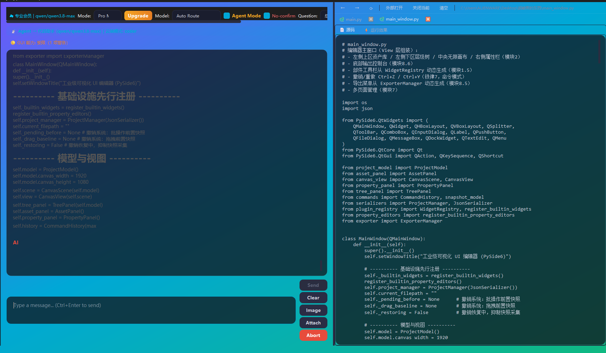

它能做什么
一句话派活
输入「帮我把这个 Excel 里三个月的销售数据做成趋势图并写一段分析」，系统会自己拆成「读表 → 清洗 → 绘图 → 写分析」并分派执行。
17 位领域专家
科研、视频短剧创作、图片设计、音乐生成、炒股、金融精算、一人企业、软件架构、AI、提示词、全栈 Codex、办公、代码、写作文案、数据科学、系统运维、通用。
AdminAgent 负责拆解
主控 Agent 读你的目标 → 生成子任务清单（含依赖关系）→ 逐个派发给合适的专家执行。
专家各带模型组
每位专家绑定「推理 / 通用 / 代码」三模型组，并在图像 / 视频 / 音乐维度上绑定对应的生成模型。
工具调用有边界
每个子任务最多 10 轮工具调用，白名单 / 黑名单双重限制，防止一个任务无限跑或调用危险工具。
汇总成一份交付
全部子任务完成后自动合并，输出一份可直接用的结果，而不是一堆零散片段。
怎么用
- 1把顶部「Agent 模式」打开。
- 2直接描述你的目标（越具体越好），不用自己拆步骤。
- 3Agent 会先给你一份子任务清单，确认后开始执行。
- 4执行过程中可以随时「急停」，也可以看到每个子任务的状态与产物。
技术亮点
- 拆解阶段与执行阶段共用同一个多模型降级链，限频时不会让整个任务崩掉。
- 子任务失败只跳过依赖它的下游，其余分支继续跑。
- 跨空间调用有上限（防循环引用），避免专家之间互相派活成死循环。
- 拆解结果解析失败时会抛出真实错误原因，而不是静默返回空任务。
看一眼
